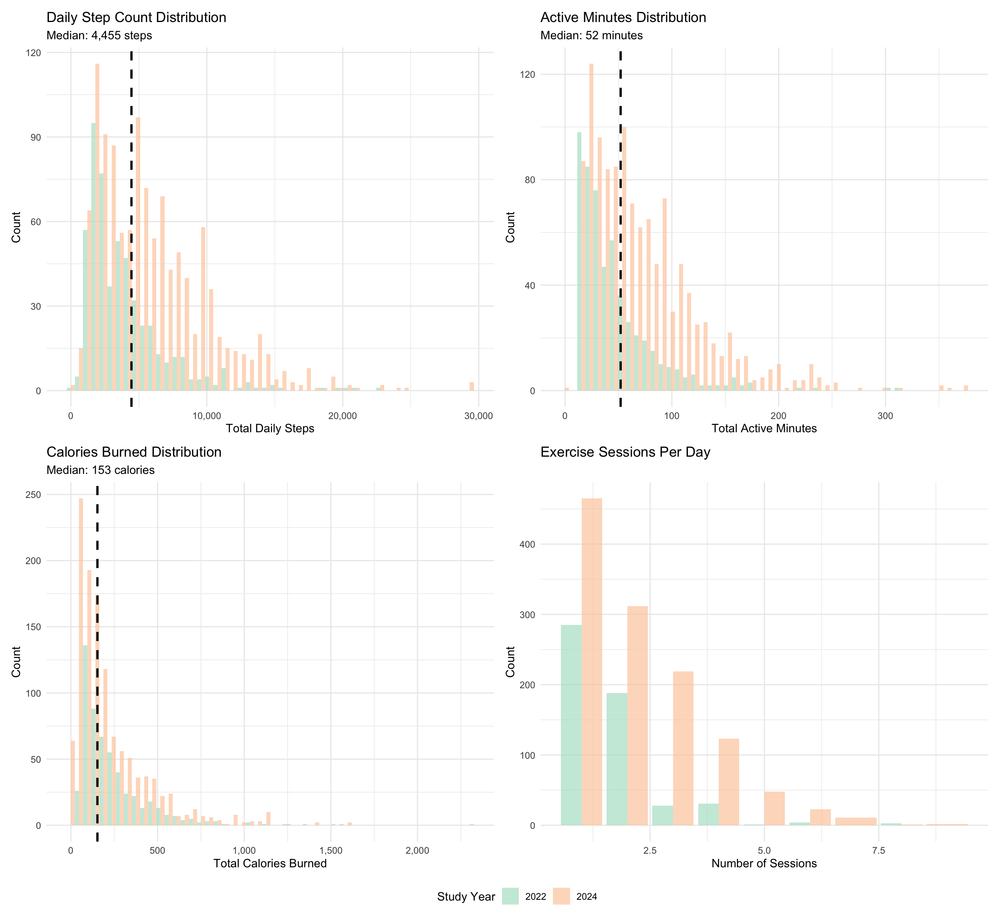
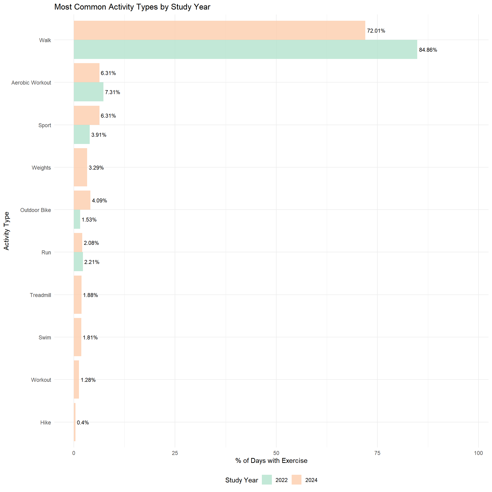
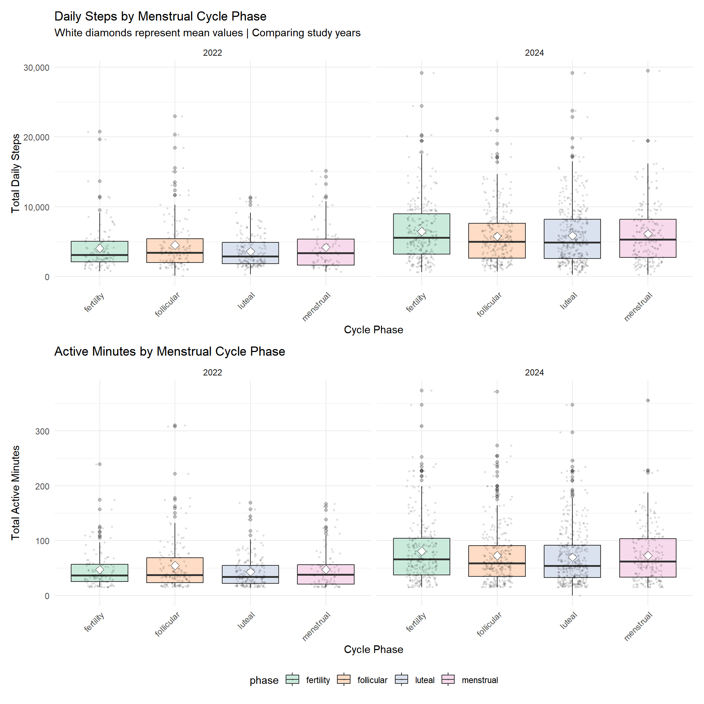

Exercise Exploratory Data Analysis
This analysis investigates the relationship between objectively measured exercise (steps, active minutes, calories) metrics and self-reported menstrual symptoms across different menstrual cycle phases. We use data from both study intervals (2022 and 2024).
Data Quality Assessment
Outlier Detection
Five observations showed extreme step counts (≥50,000) likely due to device errors. These were excluded from step count visualizations only, all analyses use the complete dataset as extreme values were isolated to step counts.These observations are retained in all descriptive statistics and statistical models to preserve the complete dataset. They are excluded only from the step count distribution plot to prevent visual distortion.
# Outlier check: Identifying and viewing extreme observations
extreme_obs = read.csv("./clean_data/all_daily_data.csv") |>
distinct(id, study_interval, day_in_study, .keep_all = TRUE) |>
filter(total_steps >= 50000 | # unlikely to complete more than 50000 steps a day
total_active_min >= 1440 | # cannot have active exercise minutes for more than 24 hours
total_calories >= 10000) |> # unlikely to burn more than 10000 calories in a day
select(id, study_interval, day_in_study,
total_steps, total_active_min, total_calories) |>
arrange(desc(total_steps))
# Displaying extreme observations
kable(extreme_obs,
caption = "Outliers with Extreme Values",
col.names = c("ID", "Year", "Day", "Steps", "Active Min",
"Calories")) |>
kable_styling(bootstrap_options = c("striped", "hover"))| ID | Year | Day | Steps | Active Min | Calories |
|---|---|---|---|---|---|
| 22 | 2024 | 883 | 1880842 | 273.4644 | 183 |
| 14 | 2024 | 922 | 1877616 | 234.2144 | 129 |
| 18 | 2024 | 922 | 1877616 | 253.8477 | 238 |
| 27 | 2024 | 887 | 1877616 | 234.2144 | 129 |
| 33 | 2024 | 887 | 1877616 | 234.2144 | 129 |
Descriptive Statistics
Exercise Metrics
# Loading data
all_daily_data = read.csv("./clean_data/all_daily_data.csv") |>
distinct(id, study_interval, day_in_study, .keep_all = TRUE)
# Exercise descriptives
overall_desc = all_daily_data |>
summarise(
Variable = c("Daily Steps", "Active Minutes/Day", "Calories Burned",
"Exercise Sessions/Day", "Days with Activity (%)"),
Mean = round(c(mean(total_steps, na.rm = TRUE),
mean(total_active_min, na.rm = TRUE),
mean(total_calories, na.rm = TRUE),
mean(n_sessions, na.rm = TRUE),
NA), 2),
SD = round(c(sd(total_steps, na.rm = TRUE),
sd(total_active_min, na.rm = TRUE),
sd(total_calories, na.rm = TRUE),
sd(n_sessions, na.rm = TRUE),
NA), 2),
Median = round(c(median(total_steps, na.rm = TRUE),
median(total_active_min, na.rm = TRUE),
median(total_calories, na.rm = TRUE),
median(n_sessions, na.rm = TRUE),
NA), 2),
IQR = round(c(IQR(total_steps, na.rm = TRUE),
IQR(total_active_min, na.rm = TRUE),
IQR(total_calories, na.rm = TRUE),
IQR(n_sessions, na.rm = TRUE),
NA), 2),
Percent = round(c(NA, NA, NA, NA,
mean(exercised_flag > 0, na.rm = TRUE) * 100), 2)
)
# Displaying table (and making NAs blank)
overall_desc |>
mutate(across(where(is.numeric), ~ifelse(is.na(.), "", .))) |>
kable(caption = "Descriptive Statistics: Exercise Metrics",
align = c("l", "r", "r", "r", "r", "r")) %>%
kable_styling(bootstrap_options = c("striped", "hover"), full_width = FALSE)| Variable | Mean | SD | Median | IQR | Percent |
|---|---|---|---|---|---|
| Daily Steps | 10673.14 | 100251.66 | 4370 | 5088.25 | |
| Active Minutes/Day | 65.7 | 50.43 | 52.05 | 59.73 | |
| Calories Burned | 226.74 | 225.59 | 153 | 209 | |
| Exercise Sessions/Day | 2.09 | 1.31 | 2 | 2 | |
| Days with Activity (%) | 30.82 |
Overall, participants demonstrated moderate daily physical activity levels. The median daily step count was 4,370 steps, with a mean of 10,673.14 steps (SD = 100,251.7). The large standard deviation and difference between mean and median indicate presence of extreme outlier observations (as identified earlier). Active exercise time averaged 65.7 minutes per day (Median = 52.05 minutes), with participants burning an average of 226.74 calories per session (Median = 153). Most participants engaged in 2.09 exercise sessions per day (Median = 2). Physical activity was recorded on 30.82% of study days, indicating high compliance with activity tracking.
Exercise Metrics by Study Year
# Comparison by study year
year_comp = all_daily_data |>
group_by(study_interval) |>
summarise(
`N Days` = n(),
`N Participants` = n_distinct(id),
`Mean Steps` = round(mean(total_steps, na.rm = TRUE), 2),
`SD Steps` = round(sd(total_steps, na.rm = TRUE), 2),
`Mean Active Min` = round(mean(total_active_min, na.rm = TRUE), 2),
`SD Active Min` = round(sd(total_active_min, na.rm = TRUE), 2),
`% Days Active` = round(mean(exercised_flag, na.rm = TRUE) * 100, 2)
) |>
rename(Year = study_interval)
kable(year_comp,
caption = "Descriptive Statistics: Exercise Metrics by Study Year",
align = c("c", rep("r", 7))) %>%
kable_styling(bootstrap_options = c("striped", "hover"), full_width = FALSE)| Year | N Days | N Participants | Mean Steps | SD Steps | Mean Active Min | SD Active Min | % Days Active |
|---|---|---|---|---|---|---|---|
| 2022 | 3698 | 42 | 3991.31 | 3132.28 | 47.79 | 37.63 | 14.6 |
| 2024 | 1961 | 20 | 13669.97 | 120533.68 | 73.73 | 53.30 | 61.4 |
Exercise patterns differed substantially between study years. The 2024 cohort showed considerably higher activity levels compared to 2022 across all metrics. 2024 participants averaged 73.73 active minutes per day compared to 47.79 minutes in 2022. The proportion of days with recorded activity increased from 14.6% in 2022 to 61.4% in 2024.
Symptom Severity
# Symptom descriptives
symptom_desc = all_daily_data |>
summarise(
across(c(appetite_score, headaches_score, cramps_score, sorebreasts_score, fatigue_score, sleepissue_score, moodswing_score, foodcravings_score, indigestion_score, bloating_score),
list(mean = ~mean(.x, na.rm = TRUE),
sd = ~sd(.x, na.rm = TRUE),
median = ~median(.x, na.rm = TRUE)),
.names = "{.col}_{.fn}")
) |>
pivot_longer(everything(),
names_to = c("symptom", ".value"),
names_pattern = "(.+)_score_(.+)") |>
mutate(
symptom = str_to_title(str_replace_all(symptom, "_", " ")),
across(where(is.numeric), ~round(.x, 2))
) |>
# Alphabetical order
arrange(symptom)
kable(symptom_desc,
col.names = c("Symptom", "Mean", "SD", "Median"),
caption = "Descriptive Statistics: Symptom Severity (Scale: 0 = None, 5 = Very High)",
align = c("l", "r", "r", "r")) %>%
kable_styling(bootstrap_options = c("striped", "hover"), full_width = FALSE)| Symptom | Mean | SD | Median |
|---|---|---|---|
| Appetite | 2.91 | 0.83 | 3 |
| Bloating | 1.60 | 1.48 | 1 |
| Cramps | 1.00 | 1.27 | 1 |
| Fatigue | 2.50 | 1.48 | 3 |
| Foodcravings | 1.83 | 1.53 | 2 |
| Headaches | 1.46 | 1.41 | 1 |
| Indigestion | 1.45 | 1.42 | 1 |
| Moodswing | 1.57 | 1.42 | 1 |
| Sleepissue | 2.01 | 1.48 | 2 |
| Sorebreasts | 0.85 | 1.11 | 0 |
Symptom severity varied across menstrual cycle phases and between individuals. Most physical symptoms showed low-to-moderate mean severity on the 0-5 scale: cramps (M = 1, SD = 1.27), fatigue (M = 2.5, SD = 1.48), and bloating (M = 1.6, SD = 1.48). Psychological symptoms including mood swings (M = 1.57, SD = 1.42) and appetite changes (M = 2.91, SD = 0.83) were similarly mild to moderate on average. The relatively large standard deviations across all symptoms reflect substantial variability in symptom experiences across the menstrual cycle.
Visualizations
Distribution of Exercise Metrics
exercise_analysis = all_daily_data
# Distribution of daily step count
p1 = ggplot(exercise_analysis |> filter(total_steps > 0, total_steps < 50000),
aes(x = total_steps, fill = factor(study_interval))) +
geom_histogram(bins = 50, alpha = 0.7, position = "dodge") +
geom_vline(xintercept = median(exercise_analysis$total_steps[exercise_analysis$total_steps > 0], na.rm = TRUE),
linetype = "dashed", color = "black", linewidth = 1) +
labs(title = "Daily Step Count Distribution",
subtitle = paste("Median:",
scales::comma(round(median(exercise_analysis$total_steps[exercise_analysis$total_steps > 0], na.rm = TRUE))),
"steps"),
x = "Total Daily Steps",
y = "Count",
fill = "Study Year") +
scale_x_continuous(labels = scales::comma)
# Active minutes distribution
p2 = ggplot(exercise_analysis |> filter(total_active_min > 0),
aes(x = total_active_min, fill = factor(study_interval))) +
geom_histogram(bins = 50, alpha = 0.7, position = "dodge") +
geom_vline(xintercept = median(exercise_analysis$total_active_min[exercise_analysis$total_active_min > 0], na.rm = TRUE),
linetype = "dashed", color = "black", linewidth = 1) +
labs(title = "Active Minutes Distribution",
subtitle = paste("Median:",
round(median(exercise_analysis$total_active_min[exercise_analysis$total_active_min > 0], na.rm = TRUE), 1),
"minutes"),
x = "Total Active Minutes",
y = "Count",
fill = "Study Year")
# Calories Burned Distribution
p3 = ggplot(exercise_analysis |> filter(total_calories > 0),
aes(x = total_calories, fill = factor(study_interval))) +
geom_histogram(bins = 50, alpha = 0.7, position = "dodge") +
geom_vline(xintercept = median(exercise_analysis$total_calories[exercise_analysis$total_calories > 0], na.rm = TRUE),
linetype = "dashed", color = "black", linewidth = 1) +
labs(title = "Calories Burned Distribution",
subtitle = paste("Median:",
scales::comma(round(median(exercise_analysis$total_calories[exercise_analysis$total_calories > 0], na.rm = TRUE))),
"calories"),
x = "Total Calories Burned",
y = "Count",
fill = "Study Year") +
scale_x_continuous(labels = scales::comma)
# Exercise Sessions Per Day
p4 = ggplot(exercise_analysis |> filter(n_sessions > 0),
aes(x = n_sessions, fill = factor(study_interval))) +
geom_bar(alpha = 0.7, position = "dodge") +
labs(title = "Exercise Sessions Per Day",
x = "Number of Sessions",
y = "Count",
fill = "Study Year")
(p1 + p2) / (p3 + p4) +
plot_layout(guides = "collect")
Step Count Distribution: Daily steps on active days showed pronounced right-skew with a median of 4,455 steps. The bulk of observations fell between 2,000-8,000 steps, with a long tail extending beyond 20,000 steps. The 2024 distribution (orange) shifted notably rightward compared to 2022 (teal), indicating higher step counts. Five extreme observations (≥50,000 steps) were excluded from this visualization only, as they distorted the scale and were obvious data errors.
Active Minutes Distribution: Exercise duration exhibited similar right-skew (52 minutes), with most sessions lasting 20-80 minutes. The 2024 cohort showed longer session durations, with the distribution peak occurring at higher values than 2022. This pattern suggests not only more frequent exercise in 2024, but also longer duration per session.
Calories Burned Distribution: Energy expenditure followed the expected pattern given step and duration data (Median = 153 calories). The heavy concentration near zero with gradual right tail indicates predominantly light-to-moderate intensity exercise, with occasional high-intensity sessions. The 2024-2022 difference parallels that observed in steps and active minutes duration.
Exercise Sessions: Most active days included 1-3 discrete exercise sessions, with a clear mode at 2 sessions. The 2024 cohort showed higher frequencies of 2+ sessions compared to 2022, suggesting either improved activity tracking or genuinely more structured exercise routines.
These distributions collectively demonstrate substantial right-skew, and high variability.
Activity Type Distribution
# Preparing activity types data
activities_long = exercise_analysis |>
filter(!is.na(activity_types), activity_types != "", activity_types != "NA") |>
select(id, study_interval, day_in_study, activity_types) |>
mutate(
activity_types = str_replace_all(activity_types, "\\n", ","),
activity_types = str_replace_all(activity_types, "\"", "")
) |>
separate_rows(activity_types, sep = ",") |>
mutate(
activity_types = str_trim(activity_types),
activity_types = str_to_title(activity_types)
) |>
filter(activity_types != "", activity_types != "Na")
# Counting activities by year
activity_counts = activities_long |>
group_by(study_interval, activity_types) |>
summarise(n_days = n(), .groups = "drop") |>
group_by(study_interval) |>
mutate(pct = n_days / sum(n_days) * 100) |>
ungroup()
# Getting top 10 activities
top_activities = activity_counts |>
group_by(activity_types) |>
summarise(total = sum(n_days)) |>
arrange(desc(total)) |>
slice(1:10) |>
pull(activity_types)
activity_counts_top = activity_counts |>
filter(activity_types %in% top_activities)
# Plot: Top 10 activities by year
p1 = ggplot(activity_counts_top,
aes(x = reorder(activity_types, pct), y = pct,
fill = factor(study_interval))) +
geom_col(position = "dodge", alpha = 0.8) +
geom_text(aes(label = paste0(round(pct, 2), "%")),
position = position_dodge(width = 0.9),
hjust = -0.1,
size = 3) +
coord_flip() +
labs(title = "Most Common Activity Types by Study Year",
x = "Activity Type",
y = "% of Days with Exercise",
fill = "Study Year") +
theme_minimal() +
theme(legend.position = "bottom") +
expand_limits(y = max(activity_counts_top$pct) * 1.15)
p1 Walking dominated exercise routines in both study years (2022: 84.06%, 2024: 72.01%), accounting for the vast majority of recorded activity sessions. Beyond walking, participants engaged in diverse activities including aerobic workouts, general sport, and strength training (weights). The 2024 cohort showed greater diversity in activity types, with more structured exercises such as aerobic workouts and weight training compared to 2022. Activities like outdoor biking, running, treadmill, and swimming appeared in both years but at much lower frequencies. Notably, some activities (e.g., weights, treadmill, swim, workout, hike) appeared exclusively or predominantly in 2024.
Exercise Patterns Across Menstrual Cycle Phases
p1 = ggplot(exercise_analysis |> filter(!is.na(phase), total_steps > 0, total_steps < 50000),
aes(x = phase, y = total_steps, fill = phase)) +
geom_boxplot(alpha = 0.7, outlier.alpha = 0.3) +
geom_jitter(width = 0.2, alpha = 0.1, size = 0.5) +
stat_summary(fun = mean, geom = "point", shape = 23, size = 3, fill = "white") +
facet_wrap(~study_interval, ncol = 2) + # Side by side
labs(title = "Daily Steps by Menstrual Cycle Phase",
subtitle = "White diamonds represent mean values | Comparing study years",
x = "Cycle Phase",
y = "Total Daily Steps") +
scale_y_continuous(labels = comma) +
theme(legend.position = "bottom",
axis.text.x = element_text(angle = 45, hjust = 1))
p2 = ggplot(exercise_analysis |> filter(!is.na(phase), total_active_min > 0),
aes(x = phase, y = total_active_min, fill = phase)) +
geom_boxplot(alpha = 0.7, outlier.alpha = 0.3) +
geom_jitter(width = 0.2, alpha = 0.1, size = 0.5) +
stat_summary(fun = mean, geom = "point", shape = 23, size = 3, fill = "white") +
facet_wrap(~study_interval, ncol = 2) +
labs(title = "Active Minutes by Menstrual Cycle Phase",
x = "Cycle Phase",
y = "Total Active Minutes") +
theme(legend.position = "bottom",
axis.text.x = element_text(angle = 45, hjust = 1))
p1 / p2 + plot_layout(guides = "collect") Daily Steps: In 2022, step counts remained relatively stable across all phases, with medians around 3,000-4,000 steps. In 2024, phase-related differences were more pronounced; the fertility phase showed higher median step counts (~6,000 steps), while the luteal and menstrual phases showed lower activity (~5,000 steps). The 2024 cohort demonstrated consistently higher step counts across all phases compared to 2022. Five extreme observations (≥50,000 steps) were excluded from this visualization as they distorted the scale and were obvious data errors.
Active Minutes: Similar patterns emerged for active minutes. In 2022, all phases showed comparable median active time (~30-40 minutes). In 2024, the fertility phase showed higher active minutes (~ 70 minutes), while follicular, luteal and menstrual phases were lower (~50-60 minutes). Both years exhibited substantial individual variability, as evident by the wide spread of data points and multiple outliers, suggesting that not all participants followed the same phase-related activity patterns.
Exercise and Symptom Associations
symptoms_long = exercise_analysis |>
filter(total_active_min > 0) |>
select(id, total_active_min, appetite_score, headaches_score, sorebreasts_score, sleepissue_score, cramps_score, fatigue_score,
headaches_score, moodswing_score, foodcravings_score, indigestion_score, bloating_score) |>
pivot_longer(cols = ends_with("_score"),
names_to = "symptom",
values_to = "severity") |>
filter(!is.na(severity)) |>
mutate(symptom = case_when(
symptom == "appetite_score" ~ "Appetite",
symptom == "headaches_score" ~"Head Aches",
symptom == "sorebreasts_score" ~ "Sore Breasts",
symptom == "sleepissue_score" ~ "Sleep Issue",
symptom == "cramps_score" ~ "Cramps",
symptom == "fatigue_score" ~ "Fatigue",
symptom == "headaches_score" ~ "Headaches",
symptom == "moodswing_score" ~ "Mood Swings",
symptom == "foodcravings_score" ~ "Food Cravings",
symptom == "indigestion_score" ~ "Indigestion",
symptom == "bloating_score" ~ "Bloating"
))
p4 = ggplot(symptoms_long,
aes(x = total_active_min, y = severity, color = symptom)) +
geom_jitter(alpha = 0.2, size = 0.5, height = 0.1) +
geom_smooth(method = "lm", se = TRUE, linewidth = 1.0, alpha = 0.2) +
facet_wrap(~symptom, ncol = 2) +
labs(title = "Daily Activity vs Individual Symptoms",
x = "Total Daily Activity (mins)",
y = "Symptom Severity (0-5)") +
scale_x_continuous(labels = comma) +
scale_y_continuous(breaks = 0:5) +
theme(legend.position = "none") +
scale_color_brewer(palette = "Set2")
p4 The scatterplots examine crude associations between daily activity
(exercise) and each symptom:
The scatterplots examine crude associations between daily activity
(exercise) and each symptom:
Negative slopes (potential benefits):
- Bloating: Considerable downward trend suggests higher activity level is associated with reduced bloating
- Fatigue: Considerable downward trend suggests higher activity is level associated with reduced fatigue
- Food cravings: Considerable downward trend suggests higher activity level is associated with fewer food cravings
- Head aches: Slight downward trend suggests higher activity level is associated with fewer headaches
- Indigestion: Considerable downward trend suggests higher activity level is associated with lower indigestion
Flat relationships (no clear association):
- Appetite, headaches, sleep issues, sore breasts, moodswings: Nearly flat line
- Cramps: Near-horizontal line despite often being referred as one of the primary symptoms of menstruation
Sleep issues and sore breasts exhibited insufficient data spread to estimate reliable trends
Across all panels, several key patterns emerge. First, the wide confidence bands indicate substantial uncertainty in all bivariate relationships. Second, many data points cluster at low activity levels (0-100 minutes), with sparser observations at higher activity, reflecting the right-skewed activity distribution. Third, symptoms generally concentrate at lower severity levels (0-2 on 0-5 scale), with relatively few observations at high severity, consistent with the descriptive statistics.Given the observable trends between daily activity and symptom severity, formal statistical modeling would be beneficial to quantify these associations and determine whether these relationships are statistically significant after accounting for potential confounders.